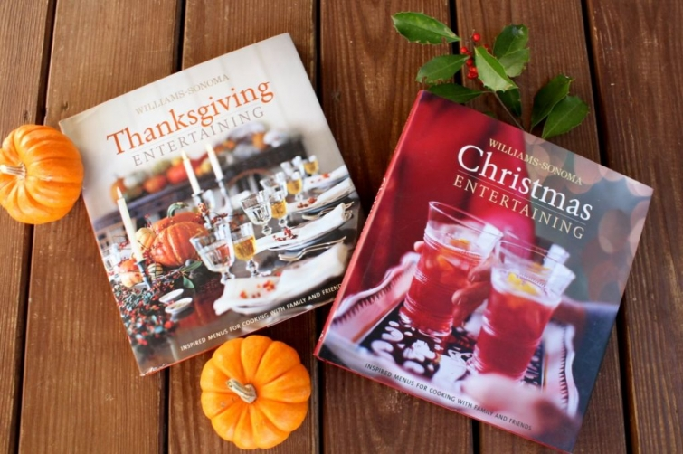

.png)
.PNG)
.PNG)
.PNG)
.PNG)
.PNG)
.JPG)
.JPG)
.PNG)
.PNG)



Before I get into today’s post let me first say Happy Veterans Day to all of you and a big thank you to all the veterans and their families who give so much for our country. Â I cannot even begin to imagine the sacrifices that have to be made by those who serve.
November 11…we are almost halfway through the month of November, and I know you are probably thinking about all the entertaining and decorating that will need to be done in the coming weeks. Â As I think about it, I know there are tons of ideas on Pinterest, blogs, and other websites, but for me (and my bad eyesight!) nothing beats a book full of ideas that I can hold in my hands. Â So with that in mind, I wanted to give away a copy of two of my favorite books for the season (and no I have no affiliation with Williams Sonoma – this is just from me. :))
I found this Thanksgiving book years ago. It was full of beautiful photographs and delicious recipes.
 Williams-Sonoma Entertaining: Thanksgiving Entertaining
It is organized around regional Thanksgiving dinners like this New England style one.
 The book gives menus, recipes, directions on making the centerpieces and other table decorations, and a work plan for getting everything done for the  meal.  How is that for organization?!
The book gives menus, recipes, directions on making the centerpieces and other table decorations, and a work plan for getting everything done for the  meal.  How is that for organization?!
I thought this pumpkin cheesecake looked heavenly (and yes, the recipe for it is in the book.)
There is also a Southern style Thanksgiving featured….that includes these divine cheddar chive biscuits.
And this Thanksgiving book also includes a plan for a day after turkey-day (aka Black Friday) lunch. Â
There is also a weekend breakfast meal with the menu, recipes, centerpiece idea, and work plan – all very do-able. Â The last chapter is about elements of the Thanksgiving table from dinnerware, to glasses, to serving pieces.
I just loved this book when I bought it several years ago, but I could not find the accompanying Christmas one. Â I searched and searched everywhere I could, but none could be found. Â Then amazingly, one of my students (whose mother knew I was looking for it) found it and gave me the book for a Christmas gift!
Christmas Entertaining (Williams-Sonoma)
The first part of the book is a little more sophisticated than I like with a cocktail party, an Italian Christmas Eve, and a plan for Christmas in the City. Â But after that it becomes much more home-style. Â I loved the New England Christmas dinner with its beautiful table setting.
There is also a Snow Country Breakfast that is perfect for us (even if we never see that blanket of white here. :()
And Williams-Sonoma doesn’t stop with Christmas in this book. Â There are also plans, menus, recipes, and all for a New Year’s Day Open House.
That meal includes the recipe for this gorgeous gingerbread with whipped cream.
So there you have it…two of my favorite books for the holidays.  The worn out copies in the photo at the top of the post are mine, but I will be giving one of you new copies. 🙂  Just leave a comment on this post and/or any of the ones that publish between now and midnight on Sunday, November 17, 2013.  You’ll be entered in the drawing (one comment per post please.)
I also wanted to tell you about another contest…one that Williams-Sonoma is hosting with Blackberry Farm. Â (I did several posts on Blackberry Farm in the fall of 2012 that you can see here.) Â You know I love that place (so I really shouldn’t be telling you about this contest since it decreases my chance of winning if you enter, right?) But this is too good not to mention. Â They are giving away a two night stay for two including their fabulous dining, a culinary demonstration, a tour of the farm, and $1500 in cash. Â You can enter it by clicking on the link below (scroll down to November 2.)
That brings us to the end of today’s post. Â I will be back this week with several other book recommendations for you for holiday entertaining ideas. Â Because these posts are part of a giveaway, I won’t be jumping in the comments this week (but I will be reading all of them.) Â And I will leave you with a question to talk about today so that you can enter the book giveaway.
Where does your family celebrate Thanksgiving?facebook.com/blackberryfarm
(Wish we had ours here!)
Hope to hear from you soon.


.PNG)
Everything looks so yummy. I am hosting our usual family Thanksgiving for 26! So
the new book would be incredible. Thank you for the wonderful blog. Enjoy your holiday! Kind regards.
That caramel cake has me salivating -it looks so yummy! I think the new book is divine! Thanks for the giveaway – and thank you even more for your inspiring blog. I love it! Keep up the great work!
We celebrate Thanksgiving at our house every year. All the relatives come here and it’s exciting! 🙂 Thanks for the chance. These books are amazing!
Really need…want…love these! Thanks for the chance!
My inlaws are closer so we usually spend Thanksgiving with them. I love entertaining and cooking so would love to host it someday!
As much as I love Pinterest, I like having a book handy. I hate it when my computer goes into sleep mode while I’m trying to make or cook something. Lol The books look lovely. We
spend Thanksgiving at my house. My sisters and I have all boys except for my daughter, so there is usually a football game in the front yard and on tv. Lol
Oh I love it all!!! If I had to pick a favorite I guess I would pick pumpkin pie. But I love the turkey, mashed potatoes, stuffing, rolls …
Ms Greeley was also my favorite designer at the Cashiers show house. I have enjoyed your posts on the show house—–it has been interesting that many of the pictures you have posted were the exact shots that I chose as well. would love to win your drawing for the William Sonoma books. My favorite holiday food is fresh cranberry and orange relish that my mother made with an old grinder that attached to the kitchen table. My job was to feed the fruit into the grinder and I loved to hear the pop of the berries! The best to your family this season.
I usually celebrate this holiday on Cape Cod with my cousins {just a little ways over the bridge from the location of that first Thanksgiving). There are lots of great cooks in the family so after an early bustling about in the kitchen a few of us will head to a favorite beach for a long walk. Later in the afternoon we’ll have some wine and appetizers followed by Tom Turkey’s appearance. It will be a real New England style Thanksgiving complete with local cranberries “popping up” in several dishes. I’ll be responsible for the homemade relish and the dessert. Can’t wait, hope the weather’s good for all the high school football games!
We celebrate Thanksgiving at my wonderful sister-in-laws house. This year she has a full blown theater for movies and games with a complete snack bar. Can’t wait. The Saturday after Thanksgiving we celebrate Christmas at my house because my Mom comes to town from out of state for Thanksgiving for a week. It’s a great family packed weekend.
Love your grapefruit spoons in the snow country breakfast photo. I keep mine in my Grandmother’s sugar dish.
…..my all time favorite meal of the year!!!! can’t pick one favorite….our meal consists of: turkey, stuffing, green beans, mashed potatoes, rolls, persimmon pudding and pumpkin pie….very simple & traditional, and oh so good!
I really enjoy your blog! Beautiful home and thoughtful life. Thanks!
I hope I’ve entered contest for Williams-Sonoma entertaining books?
Since my parents are gone I host Thanksgiving for the family. My brother in law makes the turkey since we all agree he has the gift of baking the best. Collards are a favorite and I start making two days before Thanksgiving. Thanksgiving evening we sit around going through the numerous Black Friday ads and plan our shopping day. This year I won’t be out with the crowds since we have a wedding to attend Friday night, which should be beautiful. It will be held at http://thefirstladyofsuffolk.com/
Thanks for the wonderful chance to win, those books look great!
I’m already invisioning myself sipping a cup of hot cider, curled up in my favorite chair living in the pages of those beautiful books! Good luck to all and have a very greatful Thanksgiving and Merry Christmas!
You had me at the cheddar chive biscuits…. 🙂 We alternate between my parents and Stacey’s parents house for Thanksgiving. But we may sneak off to the mountains after we eat… SHHHH don’t tell the kids if you run into them… 🙂
With my daughter and new son-in-law in FLORIDA! …and enjoying my sister-in-law’s amazing cooking. Can’t wait. Hope you have a great one, I look forward to your posts every week.
Thanksgiving dinner at my sister in laws – then off to serve a late afternoon / early evening meal to homeless and others that do not have Thanksgiving plans which is hosted annually at the food court in our local mall by MR. Thanksgiving.
My family and inlaws have always gathered at our home for Thanksgiving. This year will be different. I recently unexpectedly lost my sweet mama. We always did our holiday baking together. Not only did she add beautiful, delicious southern food to my table, her humorous personality added lots of laughter and fun. Briefly, I considered cancelling Thanksgiving at our home this year, but I knew Mama would want us to have a happy day. We are going to try and do just that, albeit an empty chair will remind us of our loss. Blessings to you, your posts are beautiful and your blog is my very favorite. I visit often because Talk of the House just makes me smile.
Nice! I am a huge WS fan! Just spent the day there on Sunday. This year Thanksgiving will be at my house with 2 of my children and their SO.
I grew up having Thanksgiving in a very small southern town, Bishopville, SC at my grandparents house. The meal was served outside in the pecan orchard on picnic tables. I ran around the grounds with my 18 cousins and ate pears right from the trees and broke open pomegranates to paint ourselves with the pink juice! My grandfather trained the local squirrels to eat from his hand, so they were close by looking for handouts during our meal. After dinner, we kids pushed each other in the mammoth hammock hanging on their wrap-around porch while the adults rocked and talked about where this or that person was now. It was a wonderful, slow holiday and I never tired of making that trip every year!
We always stay home for the holidays. Many thanks for the chance to win these lovely books. Wishing you and your family the best of holidays!
We are military so where ever we are stationed is where we celebrate Thanksgiving. We love having fellow AF families over or even heading to their houses for THanksgiving. This year we will invite friends over and have a big meal.
Happy November to you Kelly, We always celabrate Thanksgiving at my home in Tulsa but last year we changed our plans at the last minute. My son and daughter in law had just moved into their beautiful new dream home and they decided it would be an honor to host everyons favorite holiday, Thanksgiving. It was a beautiful day and the food was amazing. My son even cooked the turkey. Those are precious memories that we will never forget because their “dream home” was located in Moore, Oklahoma. It along with most of their neighborhood and a large part of their city was destroyed in the May 20th EF5 tornado. They lost their home but my son, daughter in law and two precious grandchildren were safe. God was good to us that day and we will be very thankful this Thanksgiving for His protection as we gather together once again in Tulsa. Next year we plan to be back in Moore as the rebuilding of their home will be completed.
As much as I love the Christmas season, I really enjoy Thanksgiving because it’s less hectic and you get to enjoy a wonderful meal with family and friends. I have always hosted Thanksgiving and have hinted a few times for my daughter to take over but so far to no avail! This year we will be enjoying it with our two granddaughters, Hannah and Lily. As I am a sales associate at our local Williams-Sonoma store I am thrilled at your latest giveaway! Our books are wonderful, and just to be able to sit and look through them is always a wonderful experience. Thanks so much for another great giveaway, have a wonderful Thanksgiving, Lindy
Hi Kelly….love opening up your website every evening hoping with fingers crossed that there’s something new! Of course my husband feels a little left out…lol. I’m from a military family (including myself) and am so thankful that we are all together for Thanksgiving. We know first hand what it’s like to be away from each other serving our country. And of course the holidays seem to be the worst. I’m so excited to be hosting Thanksgiving at my house with all the family together. How blessed am I :). Thank you for always brightening my day and I hope you have a wonderful holiday!
I love Williams Sonoma! Last month we celebrated Thanksgiving and I always host a large dinner. We go around the table thanking God’s for His blessings. It is a small gathering, but nonetheless enjoyed by all. This year, I brined a turkey for the first time Williams Sonoma style! I think it is important to my family that I prepare a special dinner for Thanksgiving. I’d love to visit Blackberry Farm sometime. Thank you Kelly for offering the book giveaway.
Thanksgiving is a day of food and football at our house. Traditional food is made by me, ate by family, and enjoyed by all. I love the house in the evening when everyone is relaxing around the TV. I usually have the grandkids make a list of what they want for Christmas. Just a great day.
What lovely tables. I have to admit that sometimes I dread this time of the year with all the work of cooking and so forth but these books almost make me excited about cooking some of the recipes. And the decorating is always fun. Wish I could hire a cook!
I would love one of those books! This holiday season will, by necessity, be different from those past. BIL and SIL come here for holidays as I enjoy cooking, but we lost our dear SIL this summer so I am making a effort to do things a little differently. Would love some new recipes and ideas to try. Thanks for your blog
Wonderful books! Kelly, I must admit I have both so please eliminate me from the giveaway. They are my go to books for the holidays. Lovely photography and easy recipes. My husband and I visited Blackberry Farm this year to celebrate our 20th wedding anniversary. This place is a little piece of heaven! Everything we had ever read or heard lived up to and/or exceeded our expectations. You will love it when you go. My only complaint is it is a bit pricey but for a special occasion, we were able to justify the expense. Wonderful memories!
Oh, what a fun giveaway! I would open those books to pretty pages and leave open on a stand on my kitchen counter.
I will be hosting Thanksgiving for my immediate family, my parents, one of my brothers and his family, my mother-in-law, and my future son-in-law and his parents. (It will be the first time my daughter’s future in-laws will come to our home…exciting!)
I love Williams and Sonoma books! We celebrate Thanksgiving in our basement party room. It is decorated like a general store, but has room for a table and chairs, rocking chairs by the fire, and a buffet for food. I am a retired elementary teacher- and am amazed that you can blog in your spare time! I know how few hours you have to yourself- and how precious the holidays are. : )
I love, love books that are visual. These books look beautiful! Actually, I celebrate Thanksgiving at my sister’s house. Here is the funny part, they fry a turkey. I make all the other food and I mean EVERYTHING. Then, we load up four vehicles and drive to my sister’s. But regardless of where we are, it is about the blessing of family and we always have a wonderful time when we are together.
Kelly,
As you know, your website is one of my highlights day.
I always do Thanksgiving at my house, my mom has Christmas. She is 93 and loves the holidays. She really can’t do it anymore so I usually cook and take it there….it’s a tradition I am raelly going to miss someday. My son and daughter are on there own and it is getting hard to co-ordinate holiday meals, but we still make it happen.
Jeanne
The books look beautiful! I am not good with original ideas and these books would make all the difference in my planning! You have the best taste. I enjoy so much the same things you do- the Mitford books, the mountains and shops – I very much enjoy your blog!
Hi Kelly, I love Williams Sonoma. I live in Southwest Missouri & visit the Williams Sonoma in Rogers Arkansas often. We usually have Thanksgiving Dinner at our house. I love to cook our big dinner of Turkey & dressing with all the fixings & then watch the game on TV or if warm go outside and enjoy being with family. I love your beautiful home & all your decorating ideas. Thank you so much for each of your posts. Can’t wait till the next one.
Carol
I love reading your blog each time you post, after I read your article today I started decorating my house for the holidays. Love decorating my dining room. I loved seeing my Princess Hayley last week at PHS. I love and miss her!!
Everything looks delicious! I will be cooking for the family…all the kiddos will be home plus my mom up from Florida. It will be great to have everyone here and the chance to cook for more than the two of us, but I wouldn’t mind being at Blackberry Farm myself!
xoxo
What a beautiful book! We will be celebrating Thanksgiving this year with international friends!
I will be hosting Thanksgiving this year. I enjoy decorating the table and the cooking as well. Sure could use these books to give me inspiration!
We’ll be at my cousin’s house this year. We have finally wrestled the holiday away from the older generation (80+) who are finally too tired to do it. Finally we can spoil them for a change! I love Thanksgiving – imagine a whole holiday about being grateful? I love it. I love fall and it’s a lovely way to end the fall season for me. Your books look terrific! What a lovely give-a-way!
My sister is hosting Thanksgiving this year, she and her husband are wonderful cooks and their turkey is always amazing. I love baking so I will be bringing the pies. My favorite pie crust recipe is actually from a Williams Sonoma catalog. I am fortunate to live nearby a Williams Sonoma store, one of my favorite shops…..I am a really good customer!
We will be having our children and grandchildren for Thanksgiving. I feel very blessed that I am able to have them all at our home. Fortunately for me, the other in-laws all do Thanksgiving on the weekend after. We will have a turkey and ham and stay to a very traditional menu. I have one DIL that makes fabulous pies and another that brings a surprise veg every year, this year an okra and tomato dish. My daughter helps me with everything else. Even with a lot of help I am still exhausted at the end of the day…..but what a wonderful kind of tired it is. ☺
I absolutely love your home. Your colors are so much like mine! Thanks for sharing them. I always host Thanksgiving at my house!!
Oh, I hope I win one of these pretty books!
For the past 5 years my daughter has hosted our family and her in laws. We all contribute to the meal. This year my SIL is cooking the turkey in his green egg. My 3 year old granddaughter is REALLY excited about the holidays and asks questions everyday…”when will we put up the stockings,will Santa come down your chimney and my chimney too”…..I have a feeling this is going to be one of our best Christmases ever!!!
Kelly,
We always spend Thanksgiving at my Parents home. My Mom always cooks a huge, traditional, meal and I get to bring a side dish or two. Then the Saturday after Thanksgiving we go to my In-laws home since my brother and sister-in-law have to travel a couple of hours to get here. My Mother-in-law never does traditional Thanksgiving foods and I am always so excited to see what she will prepare each year. I always get to bring a side dish and the wine.
Both of the books are just beautiful. I really like Williams-Sonoma to begin with but have not seen their books before. Just gorgeous!
I have a couple WS cookbooks in my kitchen. They look so pretty. The recipes are awesome. Tried just maybe 1 or 2. We usually have a very quiet Thanksgiving with just my daughter, son in law and grandaughter. Most of my husbands family is out of town. Thanks for a chance to win.
What a beautiful table setting and those bisciuts look delish!
Thought it was just ME that needs to cuddle up REALLY close with my books! 🙂 We hold Thanksgiving at our house every year, for our families and any friends who need a place to go. We have topped out at 42-ish people, but usually it’s about 34 for dinner. I love the Williams-Sonoma cookbooks. I found one of our favorite Turkey Day recipes in one–a Cranberry Applesauce that we all think tastes just like Christmas! Happy holidays!
Kelly I am a sucker for all those eye candy coffee table books. While I might never use a recipe in them, I love paging through them and dreaming of a White Christmas.lol…
Somehow I feel like we must have gingerbread with whipped cream right now!
I haven’t bought a book in forever!! These look great. It never fails I pull out my Southern Living, Martha Stewart, etc. books every year and look at them before the holidays. 🙂 Thank you for your generosity!! 🙂 I am fortunate to still be able to go to my grandparent’s house for Thanksgiving. They are in their late 80’s so our family is making all the food except to appease Mammy we are letting her cook shucky beans. 😉 The past couple years and especially this year we know it could be our last with them (in their home) so it is always special. 🙂
This year will be a first for our family. We will be celebrating Thanksgiving with my 93 year old mother who now is in a nursing home in Oklahoma. We will be ever thankful for having her in our lives for so long.
Our family typically goes back and forth between my sister’s home, and ours for Thanksgiving — and Mom does the fabulous Christmas dinner!
definitely inspiring…makes me want to get going on holiday entertaining…
Hi Kelly: Happy, blessed Thanksgiving to you and your family. Can’t wait to see the pictures of your beautiful home and the decorations for these two upcoming holidays. Would so love to win either one of these Williams Sonoma books…they look wonderful. The cheddar chive biscuits look amazing…could you post that recipe sometime? I think Thanksgiving is my favorite because of the meaning and the great food. We probably will have a quiet dinner at our home this year with my son and family and maybe my DIL’s parents. Or it could be switched to her parents beautiful home. Or…maybe..she will open her home to host it with all of us contributing to the feast:-) Would be a first but so welcoming :-)))) The Blackberry farm trip looks amazing!
Blessings to you sweet poster!
We have enjoyed Thanksgiving at my house for the last several years. Even though our family is very small, it is nice to get together for the holiday.
I really enjoy all the country inns you feature on your blog, and I have always wanted to visit Blackberry Farm. These two books look like wonderful additions to my cookbook library!
Oh- I love books like that. I am looking forward to Thanksgiving here with all the kids home. I am hoping that my double ovens are fixed before the big day rolls around!
How fun to get that book as a gift from a student’s mother. God smiled on you there! xo Diana
Love Thanksgiving! I have hosted Thanksgiving for 30+years and this year my son and daughter in law will host in their new home. Looking forward to a new tradition.
We took over Thanksgiving after my husbands grandmother died. We host from between 16 and 28 people! Thankfully grandma left us service for 30 of her beautiful Wedgewood china. I love getting it out and thinking of all the people who have gathered to use it.
I love your blog and cannot wait to read when you post a new one. Can’t wait to see all of your ideas for thanksgiving and Christmas.
We always have our family come to our home for Thanksgiving. It is one of our favorite times for entertaining. I would love to have the Williams Sonoma books . They always are a joy to look at for great ideas.
Wonderful giveaway! I don’t own any yet but the pictures look great-lots of ideas! We always host Thanksgiving so these would definitely come in handy-Elizabeth
We celebrate with family at our house. The family is growing!
The books both look gorgeous. What a shame your giveaway isn’t international. Good luck to everyone entering!
Ali
What a wonderful and generous giveaway — thank you!! Were your ears burning last night? I made your salad with Romaine and Ramen and your grilled cheese sandwiches from your recent post last night and we were all singing your praises!! My husband said it is the best salad he’s ever had! I had some leftovers and sent the ingredients home with my stepson for him to make for lunch today (he’s off work on Veteran’s Day). He’s probably enjoying them right now. So — another HUGE thank you from my home to yours!!
I have a few of their cookbooks (the “Salads” one has a lot of good basics) and they are always pretty to look at. Thanks for the opportunity!
Kelly,
What a great couple of books. I’ve seen these in stores but never browsed through them. They look like they’d be such solid reference books, not to mention the inspiration aspect.
We hosted Thanksgiving every year until our youngest son married and bought a home a few miles away. Now the newlyweds want to host and I only have to bring a few sides. Their home is lovely and I’m thrilled to pass the baton.
xo,
Karen
We have always had the holiday meals at my house but now without my mother I have to try to make it taste like hers and my motherinlaws! Which isn’t easy! But is getting better with practice! Thanks to WS’s brining kit I have a very moist delicious turkey. Love both of the WS books! Happy holiday season which stretches from Sept. on with the cooler weather for me! Love Thanksgiving!
Hi Kelly,
Last year we started hosting Thanksgiving for our family. We will have dinner for 13 this year, thankfully my husband is a huge help. The Williams-Sonoma books are lovely, sitting down with a great book and a cup of tea is one of my favorite things!
We host Thanksgiving every year for my family, my in-laws and any friends who find they need a place to celebrate.
Thanksgiving has been in our home for many years but this year our son is going to host! Another son just got married but lives in a tiny apartment. I am looking forward to having my new DIL host someday. She is a wonderful cook 🙂
I have looked at and admired these books online. Anything from Williams-Sonoma is always 1st Class! Thank you for hosting this give-away~
We will be celebrating Thanksgiving here in Ohio. We alternate years between my husband’s family and mine. This year we will be with my in-laws.
Both of those books look like wonderful resources. I was sad to find out recently that our Williams-Sonoma store closed. I didn’t get in there a lot, but it was fun to poke around in every once in a while, especially around the holidays.
We host Thanksgiving every year and I can’t wait! Looking forward to being with our family which usually includes giving Thanks to God for our many blessings, tons of laughter, and a lot of eating!!!
I always host Thanksgiving. It is by far, my favorite holiday! We will celebrate at my house with both my husband’s children and my family. After a big meal, we watch movies and relax. A perfect day for sure!
Becky, hope you are on the mend, but don’t overdo! I had that surgery many years ago, and felt great after a few days, but know that internally, you are still healing!
We shuffle between my home and my sister-in-law, and it’s her turn this year. We mostly stick with tradition, but once in a while we add a “newbie” recipe to see if it flies! :0) So far, not much has flown with us! I know the days will come when the next generation takes over, and am sure they will do it different, because they like quick, easy and simple. UGH! Maybe we can decide to travel instead?? Nah, being together is more important than the food!
Thanks to our veterans and service men and women for the freedom you provide, especially my family members past and present, who serve. God bless!
I am always inspired by your posts! I also enjoy holding the books in my hands so that I can go back again and again to see the pictures. Wish your posts could be published!
I’m the hostess, who could use a few ideas. They sound like great inspirational books!
Those two Williams Sonoma books are fabulous. I would especially enjoy their version of an Italian Christmas Eve since my family too celebrates Italian traditions. Thanksgiving dinner has been at our house the past thirty- two years. We have host twelve to thirty family/friends throughout those years.
Hi. Hopefully Thanksgiving will be here. I am recovering from gallbladder surgery and hoping I will feel like preparing dinner.
Williams Sonoma cookbooks are awesome. Hopefully you will draw my name. Happy Thanksgiving to you and your family. Blessings, Becky
The photos in the books are beautiful. I know the recipes are fabulous. The table settings look doable! I love that!
Last year we celebrated Thanksgiving at the beach, and it was really fun! This year I think I will be hosting a very small celebration at my home. I don’t get to experiment with the menu very much because there are so many traditions that people expect. This may be the year I can throw caution to the wind.